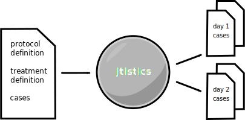
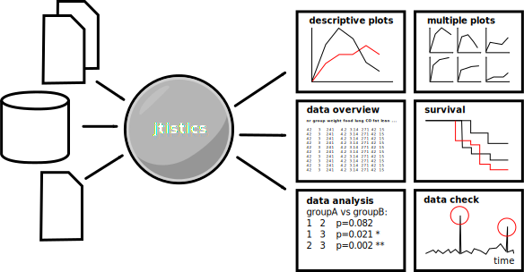

plan, supervise, and analyse
clinical trials and experimental protocols
5000+ cases
7 protocols
4 models: cancer cachexia, heart insufficiency, amyotrophic lateral sclerosis, stroke
200+ treatment groups
8+ years in-field expertise
handles a broad range of clinical analyses
enables you to define protocols and cases clearly
keeps track of treatment groups, assists with randomization
generates task plans for every day and analysis
allows early consistency check of gathered data
performs fast statistical analyses, allowing early intervention
uses simple spradsheets as user frontend
data and executables fit on normal usb drive
task plans are meant to be taken to the animal facility
modular architecture allows integration of new data sources
has a 1-click-interface

locomotor activity
echocardiography
body weight
food intake
histology
nmr
supports a variety of platforms (Windows, Linux, MacOS)
data integrity ensured by database schema
underlying sql database allows easy data access for other tools

significance tests
regression tests
multipanel plots
linear models
correlations
survival
LibreOffice (frontend interface)
Java, Python (data im-/export)
ant (flow control)
R (statistical analyses)